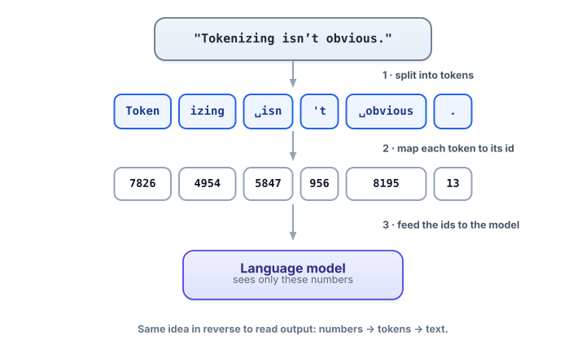

Tokens & tokenization
Tokens are the units everything is measured in — your costs, your context limits, your latency. They also explain a pile of “why did it do that?” behaviors. Spend twenty minutes here and a lot of mysteries dissolve.
Why you can’t skip tokens
In the last lesson we said models predict the next token. Tokens aren’t just an implementation detail — they’re the currency of this entire field. Three reasons they’re worth real attention:
- Money. Providers bill per token, not per word. Two prompts that look the same length can cost noticeably different amounts.
- Limits. A model’s context window (how much it can “see” at once, next lesson) is measured in tokens. Run over and your input gets cut off.
- Weird behavior. Why do models miscount the letters in “strawberry,” or handle some languages more expensively? Tokenization is the answer.
A token is a small chunk of text — often a whole common word, but sometimes a word-piece, a single character, or a punctuation mark. The fixed list of all tokens a model knows is its vocabulary (typically ~50,000–200,000 entries). A tokenizer is the tool that converts your text into tokens (and their numeric ids) on the way in, and converts tokens back to text on the way out.
Why chop words into pieces at all?
Two bad extremes make the reason clear. If every whole word were its own token, the vocabulary would be enormous and the model could never handle a word it hadn’t seen (a typo, a new product name, a rare medical term). If every single character were a token, the vocabulary would be tiny but sequences would be punishingly long and the model would waste effort relearning that “t-h-e” spells “the.”
Sub-word tokenization is the sweet spot. The most common scheme is byte-pair encoding (BPE): start from characters and repeatedly merge the most frequent adjacent pair into a new token, learned from data. Frequent words like “the” end up as one token; rare words get built from a few sub-word pieces. This way the model can represent any text, common things stay efficient, and the vocabulary stays a manageable size.

See it for yourself
Type anything below. Watch the token count, and notice where the splits fall — short common words stay whole, long or unusual words fragment, spaces ride along with the word that follows, and punctuation breaks off.
Tokenizer (approximate)
A lightweight stand-in that mimics how real sub-word tokenizers behave. For exact counts, use tiktoken in Colab (code below). Try the example buttons, or type your own.
The demo above is an approximation. To see the real tokens a production tokenizer produces, run this (it’s free and needs no API key):
!pip install tiktoken
import tiktoken
enc = tiktoken.get_encoding("cl100k_base") # tokenizer used by the GPT-3.5/4 family
text = "Tokenizing isn't obvious."
ids = enc.encode(text)
print(len(ids), "tokens") # -> 7 tokens
print(ids) # the numeric ids
print([enc.decode([i]) for i in ids]) # the human-readable piecesTry swapping in your own sentences, a paragraph of code, and a sentence in another language. Compare the token counts — you’ll feel the cost differences directly.
There isn’t one universal tokenizer. Each model family ships its own (for example, OpenAI’s cl100k_base and the newer o200k_base; other labs use their own). So a “1,000-token” prompt for one model may count slightly differently on another. The concepts here are universal; the exact splits depend on the model.
The rules of thumb that pay off daily
| Rule of thumb | Why it matters on the job |
|---|---|
| ~4 characters ≈ 1 token in English (≈ ¾ of a word) | Quick mental math for “will this fit?” and “what will this cost?” 1,000 tokens ≈ 750 words. |
| A leading space is part of the token | "token" and " token" are different tokens. This subtly affects prompts and stop sequences. |
| Code, JSON, and unusual words use more tokens | Lots of punctuation and rare identifiers fragment heavily — budget more tokens for code-heavy prompts. |
| Many non-English languages cost more tokens | Scripts under-represented in training fragment into more pieces, so the same meaning costs more — a real fairness and budgeting issue. |
- A token is a chunk of text (often a word-piece); the model’s fixed list of them is its vocabulary.
- Sub-word tokenization (e.g. BPE) balances a manageable vocabulary against short sequences, and can represent any text.
- Tokens are the unit of cost, context limits, and latency — not words.
- Rule of thumb: ~4 characters ≈ 1 token in English; code and many languages cost more.
- Quirks to remember: leading spaces belong to tokens, and models see ids, not letters — which is why character-level tasks trip them up.
A user asks the model, “How many letter R’s are in ‘strawberry’?” and it answers “two.” Using tokenization, what’s the best explanation?
1. Estimate (no tools) how many tokens are in: “The mitochondria is the powerhouse of the cell.” Then check with the demo. How close were you?
2. In Colab, tokenize the same sentence in English and in another language you know. Which costs more tokens, and why?
3. You have a model with a 8,000-token context window. You want to feed it a 30-page document (~12,000 words). Will it fit? Show your reasoning.
▸ Show solutions & reasoning
1. The sentence is 8 words and ~48 characters. At ~4 chars/token that’s roughly 11–13 tokens (common words stay whole; “mitochondria” and “powerhouse” may split). The point isn’t to be exact — it’s to build the reflex of estimating cost/space in tokens on sight.
2. Almost always the non-English version costs more, often much more, if its script is under-represented in the tokenizer’s training. The same meaning fragments into more sub-word pieces, so you pay more tokens for identical content — worth remembering when you build for a global audience.
3. 12,000 words × (1 token ÷ 0.75 words) ≈ 16,000 tokens. That’s double an 8,000-token window, so no, it won’t fit in one shot. This is exactly the problem that motivates chunking and RAG in Track 3: don’t stuff the whole document in — retrieve only the relevant pieces.
BPE is trained, not hand-written. Start by treating every character (technically every byte, so any text is representable) as a token. Then scan a large corpus and find the most frequent adjacent pair of tokens — say t followed by h. Merge it into a new token th, and add it to the vocabulary. Repeat: next maybe th+e → the, then common suffixes like ing, ed, tion. Keep going for tens of thousands of merges. The merges you’ve learned, applied in order, are the tokenizer.
This explains the quirks you saw. Frequent words become single tokens because they got merged early; rare words never earned a merge, so they stay in pieces. Leading spaces matter because the merges were learned over text where spaces precede words, so " the" (with its space) is its own learned token, distinct from "the". And because everything bottoms out at bytes, the tokenizer can encode emoji, code, and languages it barely saw — just less efficiently. When you later wonder why a prompt costs what it costs, you’re really asking which merges fired.
You can now reason in tokens. Next we’ll ask: what does the model do with a sequence of these tokens — how much can it hold at once, and how does it decide which earlier tokens matter? That’s context windows and attention… but first, the idea that gives tokens their meaning: embeddings.